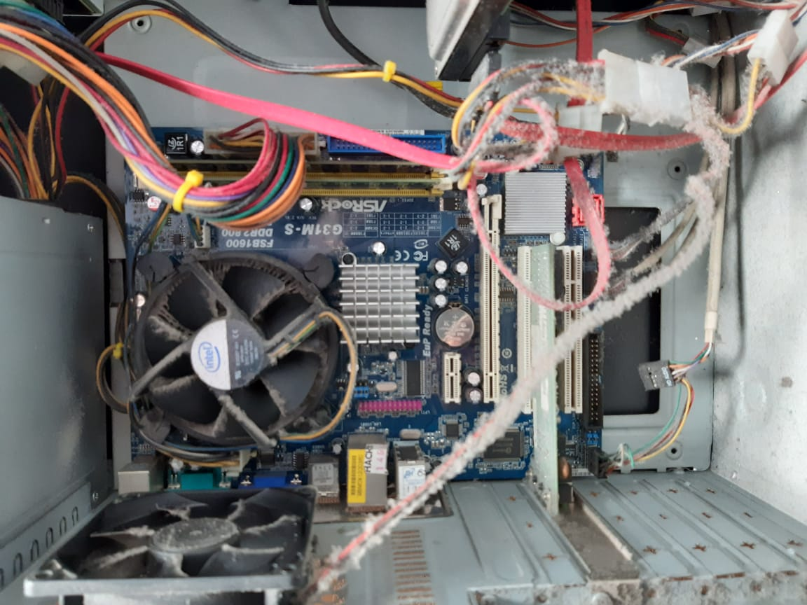
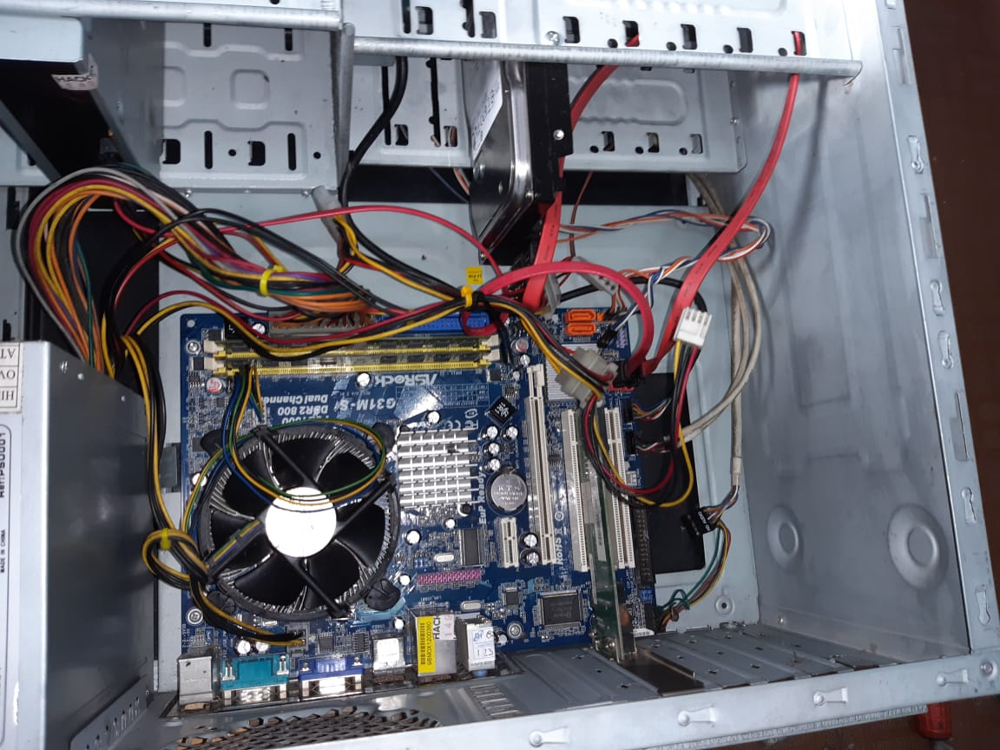
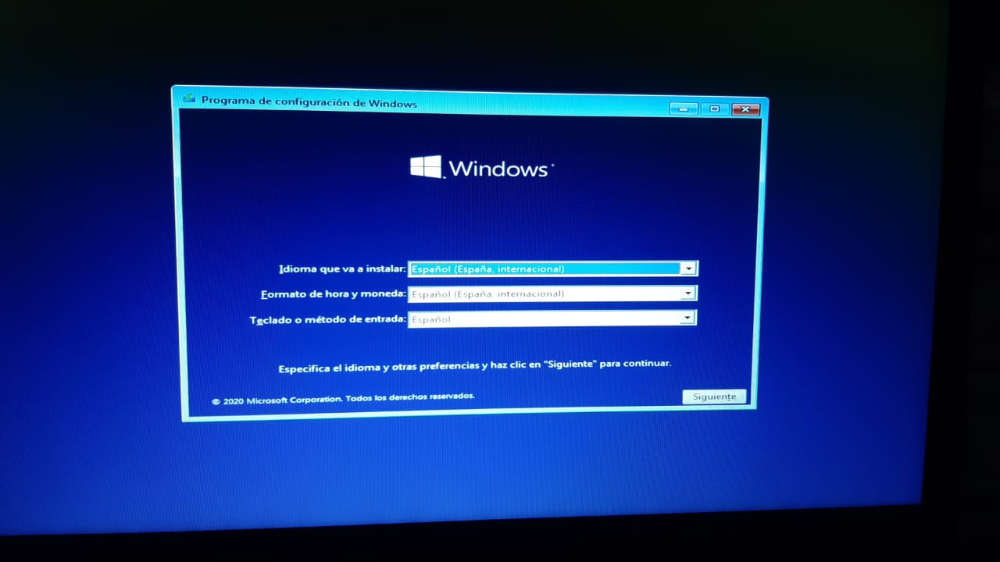

Los servicios que ofrecemos en System computer Manizales se realizan siempre con altos estandares
reglamentarios, garantizando siempre un buen trabajo en cada servicio que prestamos, brindando ademas
una garantia al cliente.
A continuación algunos de nuestros servicios:
Mantenimiento preventivo y correctivo
MANTENIMIENTO PREVENTIVO: El primer objetivo es evitar o mitigar las consecuencias de los fallos de los equipos de cómputo logrando prevenir las incidencias antes de que éstas ocurran.
Nos ayuda a reducir los tiempos generados por mantenimiento correctivo; prolonga considerablemente la vida útil y evitamos costosas reparaciones que se pueden evitar si programamos un mantenimiento periódico según el uso y los factores ambientales donde se encuentren los equipos.
El POLVO es causante de la gran mayoría de problemas. En primer lugar hay que tener en cuenta de que el polvo es CONDUCTOR DE ELECTRICIDAD y la acumulación de éste puede llegar a dañar o provocar un mal funcionamiento de alguno de los circuitos electrónicos que posee un equipo,
generalmente corto-circuitos. También puede ocasionar atascamiento, degradación de velocidad y ruido de los componentes mecánicos y sistemas de ventilación.
MANTENIMIENTO CORRECTIVO: hace referencia a CORREGIR y REPARAR alguno de los componentes de nuestro Computador o Portátil; puede ser una soldadura pequeña, el cambio de una pantalla, un adaptador, una memoria RAM, un Disco Duro, entre otras),
o el cambio total de algún dispositivo periférico como el ratón, teclado, monitor, fuente de poder, etc.
Antes

Después

Formateo e instalación de sistemas operativos
Éste tipo de instalación va enfocado en solucionar todos los problemas que puedan causar el sistema operativo,
logrando que el equipo vuelva a su normalidad, retornen la estabilidad, la confiabilidad y la velolocidad
